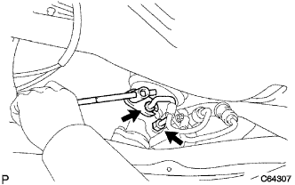

Power steering link asset removal |
| 1. Front tire directly advanced status inspection |
| 2. Remove the steering column hole cover plate |
Remove the two clips and remove the hole cover plate.
| 3. Steering sliding York SUB-ASSY |
 |
Attach the seat belt so that the steering wheel does not rotate.
 |
Loosen the bolts on the column side (A) of the sliding yoke.
Remove the bolt on the gear side (B) of the sliding yoke.
Mark the sliding yoke and the interimide shaft, and separate the sliding yoke.
 |
Remove the clip A and separate the hole cover from the body.
| 4. Steering column hole cover SUB-ASSY No.1 Cut off |
Remove the clip A and separate the hole cover No.1 from the body.
| 5. Remove the front tire |
| 6. The engine Anda cover LH is removed |
Remove two bolts and two screws and remove the engine undercover LH.
| 7. The engine Anda cover RH is removed |
Remove two bolts and two screws.
Remove the nut and remove the engine undercover RH.
| 8. Power steering fluid |
| 9. Exhaust pipe ASSY FR removed |
Remove the bolt and remove the clamp.
Take two exhaust pipe support No.4.
Remove the two bolts and two springs and remove the exhaust pipe ASSY FR.
| 10. Pressive tube Assemble |
 |
Remove the bolt and separate the cramps of the Tekshiya Feed Chew ASSY from the cross member.
|  |
Use the Union Nut Wrenten 17 to separate the pressure feed tube ASSY.
| 11. Remove the front axle shaft nut LH |
 |
Set SST according to the groove of the drive shaft, and use a hammer to solve the kashime.
Use Soketsu trench (30mm) to remove the hub nut.
| 12. Remove the front axle shaft nut RH |
| 13. Speed sensor FR LH separation |
Remove the bolt and separate the speed sensor wire and flexible hose from the shock absorber ASSY.
 |
Cut the clip from the shock absorber ASSY.
 |
Remove the bolt and separate the speed sensor FR from the steering knuckle.
| 14. Speed sensor FR RH separation |
| 15. Stabilizer bar FR separation |
 |
Fix the bolt with a spanner (10mm) and remove the nut.
Take two and two cushions and two cushions and separate the stabilizer bar.
| 16. Front suspension Lower arm No.1 LH separation |
Remove the cotter pin and castle nut.
 |
Use SST to separate the ball joint part of the Rewer Arm No.1 from the steering knuckle.
| 17. Front suspension Row arm No.1 RH disconnection |
| 18. Tie rod end sub-assy LH separation |
Remove the cotter pin and castle nut.
 |
Use SST to separate the tie rod end from the steering knuckle.
| 19. Tie rod end sub-assy RH separation |
| 20. Front axle ASSY LH separation |
Use a plastic hammer to lightly hit the tip of the drive shaft ASSY and remove the shaft and axle asser.
Press the front axle ASSY to the outside of the vehicle and pull out the drive shaft ASSY from the axle ASSY.
| 21. Front axle assigned separation |
| 22. Front drive shaft ASSY LH removed |
 |
Use the SST to remove the drive shaft ASSY.
| 23. The front drive shaft ASSY RH is removed |
 |
Use a brass bar and a hammer to remove the drive shaft ASSY.
| 24. Engine ASSY W/Transxal support |
Support engine jacks using engine jacks and engine jacks.
| 25. Front suspension cross member SUB-ASSY |
 |
Remove the bolts and two nuts and separate the mounting -in -yujerter RR from the cross member.
Support cross members with mission jacks.
 |
Remove the four bolts and remove the cross member with the steering link asser.
| 26. Power Steering Rack Housing Heat Insulator removes |
Remove the bolt and remove the heat -in -si -yu letter.
| 27. Steering column hole cover SUB-ASSY No.1 |
| 28. Steering Interamide Shaft ASSY No.2 Remove |
 |
Mark the interview with the interview with the interview with the Shayaft and the control valve.
Remove the bolt and remove the interview.
| 29. Power steering link asset |
 |
Mark the steering link Ass, bracket No.2 and Gromet No.2.
 |
Remove four bolts and four nuts, and remove the steering link Assembly from the cross member.
Remove the bracket No.2 and Gromet No.2 from the steering link assembly.